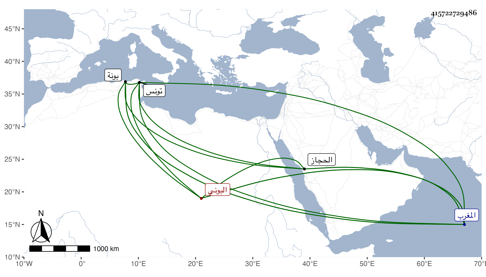

0902Sakhawi.DawLamic.ITO20230111-ara1.EIS1600.415722729486
Biography ID: 415722729486
البوني نسبة لبونة بالمغرب من أعمال تونس هو الجمال محمد بن الشهاب أحمد بن أحمد قدم جده من المغرب وهو فقير جدا فقطن الحجاز وترقى ابنه بخدمة الشريف بركات وكان فيه خير بحيث وقف في مرض موته على البيمارستان المكي بعض الأماكن وخلفه ابنه في الترقي وله أخوة .
